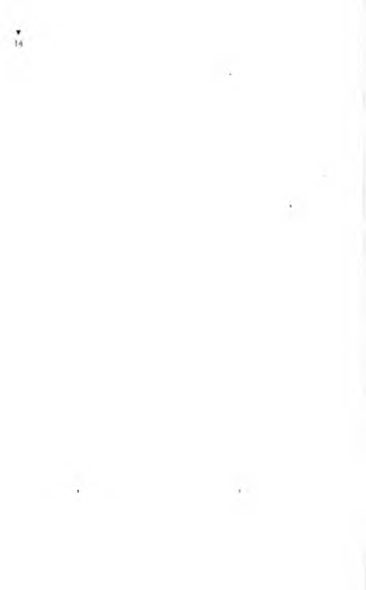
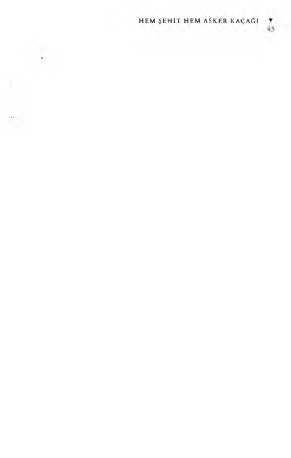

:ı^
NESİN YAYINEVİ
Yaşar Yaşamaz kendi öyküsünü A ziz Nesin in
nasıl yazdığını anlatıyor
Meral Çelen
/ \ z i z Nesin beni ne kadar yakından tanıyor, başımdan geçenleri
s 'ızlere anlatıyorsa, ben de onu iyi tanıyorum. Yalnız yazarlar mı
kahramanlarını anlatır? Ben de sizlere, A ziz Nesin in benim yaşa-
nıöykümü nasıl yazdığını anlatacağım...
Bu düşün, nerden aklıma geldi diye sorarsanız, kendiliğinden
oluverdi... Iş aramak için yollara düştüğüm şu son günlerde, nereye
gitsem, nerde dolaşsam, herkesin ağzında bir “Yaşar Yaşamazdır
gidiyor... İlk günler şaşırdım, aptallaştım... Birdenbire bu kadar
büyük bir ime kavuşmak tatlı bir sarhoşluk veriyor insana ama, bir
de tedirginleşiveriyorsunuz... Neden derseniz, eee o zaman herhangi
biri olmaktan çıkıyor, rahat hareket edemiyor, üstünüzü başınızı,
yakanızı paçanızı toparlamak gereğini duyuyorsunuz..
Yolda giderken, sağdan soldan şöyle şeyler çarpıyor kuLağıma:
- A m a n çabuk, Yaşar Yaşamaz başlayacak televizyonda...
- Benim başıma gelenler, Yaşar Yaşamazın başına bile gelmemiştir...
- Geçen gün başıma bişey geldi, aynen Yaşar Yaşamaz...
Bunları duyunca insan hem seviniyor, hem de bir tu h a f oluyor.
Adamın yanm a gidip, “İşte, ‘N e Yaşar Ne Yaşamaz durumda olan
Yaşar Yaşamaz benim” demek geliyor içimden... Ünümüz her yanı
sarmış ama ben yine yaşama savaşında bir Yaşar Yaşamaz...
Yeni bir iş bulamayınca birden aklıma geldi: “Ben de A z iz N esinin benim öykümü nasıl yazdığını anlatır, üç beş kuruş kazanırım, şu bayramı olsun rahat geçiririm,” dedim.
Efendim bu A ziz Nesin, kim i kitaplarını bazı dostlarının üstelemelerine borçludur. Örneğin “Böyle Gelmiş, Böyle Gitmez”... Oğuz Akkan, o zamanlar Akşam gazetesinin genel yayın müdürüydü. “İlle
de kendi yaşamöykünüzüyazın”diye tutturmuştu A ziz Nesine. İşte
“Böyle Gelmiş, Böyle G itm ez’in ilk cildi böyle yazıldı. Oğuz Akkan
şimdi bir gazetede çalışmadığından, ikinci cildinin yazılması da
uzadıkça uzuyor...
“Yaşar N e Yaşar, Ne Yaşamaz” da böyle oldu. Ankara Radyosu
Eğlence Programı M üdürü Bay Aymergen bir gün A z iz Nesine
telefon etti, konuşmak istediğini söyledi. A ziz Nesin eve çağırdı Bay
Aymergen i, konuşmaya başladılar.
Bay Aymergen, pazar sabahları yayımlanmak için oniki dizilik
radyo oyunu istiyordu. A ziz Nesin o sıra çok işi olduğunu bahane
ederek bu isteği geri çevirmek istedi ama, işin aslı başkaydı. Bana
sorarsanız “skeç” ve “eğlence”sözleri hoşuna gitmemişti. Gerçi A ziz
Nesinin her zaman işi vardır, boş durduğu görülmemiştir ya, bu da
bir işti eninde sonunda... Bay Aymergen bunu anladı mı bilmem
ama. A z iz Nesine şöyle dedi: “
A z iz Bey, bizim asıl amacımız, sizin
adınızı radyodan söyletmek ve bir oyununuzu oynatmak... ”
Bu söz üstüne A z iz Nesin hemen razı oldu. Çünkü hepinizin
bildiği gibi, öyle zamanlar olur ki, radyoda değil adı, kitaplarının
reklamı bile geçmez. Ayrıca A z iz Nesin çocuk gibi duygulu bir
adılındır. Başkalarının kendisini böy leşine düşünmesi hoşuna gitti...
Benim yaşamöykümü yazmaya oturduğu zaman, kendinden çok,
kendini düşünenleri sevindirmek istiyor gibiydi.
Ama Bay Aymergen gidip de, yazı masasında, ak kâğıtla karşı
kaışıya kalıma işler değişti. Çünkü başka şeye çalışıyordu ve yeni
blı vahilı yu hazır değildi. Ismarlama elbise gibi, ısmarlama öykü, laman, di t oyun yazılmaz... Öykü dosyalarını, oyun dosyalarını,
nailauııı k u l i s i n d i dıırdıı... Biraz zamanı olsaydı, sizler radyodan bıiıhıı r / n 1»/, l‘iı başkasının öyküsünü dinleyecektiniz... Neyse ki
Bay Aymergen sıkıştırmış, bir hafta sonra bikaç diziyi almaya geleceğini söylemişti. Onun için A z iz Nesin, umutsuzlukla kitaplarını karıştırmaya, işaretlemeye başladı... Ben de heyecanla, hiç sesimi
çıkarmadan izliyordum... Yani koskoca yazara akıl verip, “Başıma
gelenleri yazsana... ”demek bana yakışır mı... Kendisinin akdetmesi
gerek değil m il
Evet... Bürokrasiyi eleştiren öyküleri ayırdı, bir sıraya koydu,
ilk oyun taslağını hazırladı... Şu rastlantıya bakın ki, ısmarlanan
dizi onikilik bir diziydi... Onsekiz olsaydı belki sizler bıkacak, altı
olsaydı belki bişeyler eksik kalacaktı... A ziz Nesin de tam oniki öykü
buldu... Ismarlanana uygun bir sayı...
Oyun taslağı hazırdı ya, daha adı konmamıştı. A ziz Nesin, arada
sırada, yanma koyduğu bir kâğıda bazı adlar yazıyor, bırakıyordu.
Sonunda bunlardan uygun birini seçecekti.
Şimdi Fransada tiyatrocu olarak ün yapmış olan Mehmet Ulusoy,
A ziz Nesin i, annesinin Sapanca’da bulunan çiftlik evine bayram
tatilini geçirmek için davet etmişti. Kurban Bayramıydı, kıştı, kar
yağıyordu, soğuktu. Bayramda gelip gidenlerden kurtulmak, dizi
oyun üstüne çalışmak isteyen A z iz Nesin, dosyalarını, notlarını
topladığı gibi, küçük oğlunu da yanına aldı, M ehmet Ulusoy'la
Sapanca’ya gitti... Başladı çalışmaya...
Bigün göl kıyısında gezmeye çıktılar. O soğuk, karlı havada,
yalınayak Çingene çocukları oynuyordu. A ziz Nesin durdu, onları
seyretmeye başladı.
Çocukların içinden, on oııbir yaşlarında bir oğlan çocuğu gelip
A ziz Nesine,
- Amca, bana bir lira versene! dedi.
- Ne yapacaksın bir lirayı?
- Ekmek alacağım...
- Peki... A l bakalım bir lirayı... Senin adın ne?
- Yaşar...
A ziz Nesin şöyle bir baktı. Gözleri dolmuştu. Yanında, aşağı
yukarı aynı yaşlarda kendi oğlu, sıkı giyimli, ayağnda pabuçlar...
Karlar üstüne çıplak ayakla basan Çingene çocuğunun adı Yaşar...
öyle bir yaratık, bir insan yavrusu ki yaşıyor desen yaşamıyor...
Yaşamıyor desen yaşıyor... Birden kafasında bir şimşek çaktı: “Yaşar
Ne Yaşar, Ne Yaşamaz”...
işte böyle acıklı bir öyküden, sizleri güldüren benim adım çıktı
ortaya... Yine de iş bitmiş sayılmazdı. Çünkü, oniki öykü hazırdı,
adım konmuştu ama, bütiin öykülerin bütünleşeceği; birana iskelet,
birana öykü gerekliydi... Sonunda bunu da buldu. Bu ana öyküyü
1948 yılında Harbiye Askeri Cezaevi nde tutuklayken yazmıştı.
O cezaevinde tutuklu işçi arkadaşlardan Osman Kuzeyli adında
biri vardı. O anlatmıştı. Osman Kuzeyli, nüfus memurluğundaki
bir yanlışlıktan dolayı, ne kendine, ne de çocuklarına nüfus kâğıdı
alabilmişti, işçi Osman Kuzeyli nirı nüfus kâğıdı yoktu ama, bu
onun cezaevine sokulmasına engel olmuyor, yalnızca iş bulmasını
önlüyordu.
Her şey tamam olunca oturup yazmaya başladı. “Yaşar Ne Yaşar,
Ne Yaşamaz"radyoda büyük bir başarıyla oynandı. Asuman Korad
rejisini yaptı, Bozkurt Kuruç da beni oynadı... Ankara Radyosundan
sonra bütün Türkiye radyolarını dolaştı. Artık herkesin dilinde “Ya
şar Ne Yaşar, Ne Yaşamaz” vardı. Bu kez tiyatrocular gelip gitmeye,
radyo oyununun, sahne oyunu olarak yazılmasını istemeye başladılar.
O da oldu, ik i ayrı özel tiyatro oynamaya başladı. Bunlardan biri
1300den fazla oynadı “Yaşar Ne Yaşar, Ne Yaşamaz'ı... Am a ne
yazık ki. A ziz Nesin bunlardan telif hakkının pek çoğunu alamadı...
Bundan başka bir de korsan tiyatrolar, A ziz Nesinden habersiz ve
izinsiz Anadolu’yu dolaşarak oynadılar...
Benim başımdan geçenler, nedense sizleri o kadar ilgilendirdi
ki, sonunda filmciler gelip gitmeye başladı... A z iz Nesin bu kez
oturdu, senaryomu yazmaya başladı... Ama filmciden telif hakkım
alamayınca, tuttu mahkemeye verdi. Bana sorarsanız A ziz Nesin
öyle mahkemeyle falan uğraşamazdı ya, bir v a k ıf kurduğundan ve
telif hakları artık bu vakfa ait olduğundan, bu bir görevdi.
Ünüm alıp yürüdü. Bir haftalık gazetede çizgi roman olarak
yayımlandım. En sonra da televizyon rejisörlerinden Çetin Öner,
“Yaşar Ne Yaşar, Ne Yaşamaz”ın televizyon oyunu olarak yazılmasını
istedi... O zaman A ziz Nesin oturdu, bu kez televizyon senaryosu
olarak yazdı beni... Bana kahrsa artık öjkelenmeye başladı sanıyorum... Benim başıma gelenlerden daha beteri, A ziz Nesin in başına geldi galiba... Yıllardır “Yaşar Yaşamaz” üstüne çalışmaktan, başka
işe zaman ayıramaz oldu.
Şimdi siz, eh artık iş bitti, A ziz Nesin de rahat etti diyorsanız
yanılıyorsunuz... Bu kez, okurlar kitapçı kitapçı gezip “Yaşar Ne
Yaşar, Ne Yaşamaz”ın romanını aramaya başladılar... Oysa böyle
bir roman yoktu. Beş altı kitaba dağılmış öykülerden derlenmiş bir
oyundu bu... A z iz Nesin, daha önce yayımlanmış bu öykülerden,
bir roman yazmak istemiyordu. Ne var ki okurların isteği, çevrenin
baskısı, A z iz Nesini aştı... Oturdu, düşündü, baktı ki o derlenmiş
öyküler bir araya gelince yeni bir boyut kazanıyor, bu kez “Yaşar
Yaşamazdı roman olarak yazmaya karar verdi...
Ne zam an yazılır, ne zam an elinize alıp benim romanımı
okuyabilirsiniz bilemiyorum ama, iyice bildiğim bişey varsa, nasıl
Don Kişot, yazarı Cervantes’in ününü gölgede bırakmışsa, galiba
ben Yaşar Yaşamaz da, A ziz Nesinin ününü aştım...
Böyle olmasaydı, bikaç para alayım diye, oturup bu yazıyı yazar
mıydım sizlere? Hele Akbaba, adı sanı duyulmamış bir yazarın
yazısını koyar mıydı sayfalarına?
Ünümün bu kadar yaygınlaşmasına, beni bu kadar sevmenize
ilk zamanlar akıl erdiremiyordum ama, şimdi biliyorum artık...
Nasıl hepimizde biraz Don Kişot’luk varsa, demek biraz da Yaşar
Yaşamaz’lık varmış... Başıma gelenler yabancınız olsaydı, sever
miydiniz beni, arar mıydınız?
Belki de onun için yazdım bu yazıyı, para bahane... Beni etli
canlı bir kahraman yapan A z iz Nesine borcumu ödemek için...
Bölüm Başlıkları
11 Tarihlerin Yazmadığı Bir Kaçakçılık
21 Namuslu Hırsız Hırsızın Malını Çalmaz
26 Doğrusunu Yalnız Defter Bilir
42 H em Şehit Hem Asker Kaçağı
50 Numarasız Olmaz
62 Hepsinin Kapısı Bir Başka Türlü
72 Ben O Ayten’in Diye Diye
90 Karşılama Törenindeki En Büyük Adam
113 Davacı Tarafın Gerekli Belgeleri İbrazına
125 Altından Değerli Tavsiye Kartı
140 Göster Buyurmuşlar Gösterelim
152 Karakaplı Nizami Bey Olmasa
İşimiz Hepten Bitiktir
171 Göster Kimliğini, Al Şapkanı
193 Sen Bir Meleksin Şekerim
216 Ölsen ölünm ez, Yaşasan Yaşanmaz
232 Herşeyin Esası Mantık
249 Nüfuskâğıtsız İnsan Sokmam Evime
277 Fazladan Üç Çocuk
292 Riçırt Reşat Denilen Casus
307 Felek Gözün Körolsun
327 Artık Ona Karakaplı Nizami Beyin
Hiç Gereği Yok
Tarihlerin Yazmadığı Bir Kaçakçılık
işinden bıkıp bezginlik getirmiş insanlarda olduğu
,
gibi, cı ezaevi
imamının da herzaman yüzü asıktı. Ağzına zorla çok ekşi bişey
sokulmuşçasına boyuna dudaklarını büzer, yüzünü buruştururdu.
Yıllardır cezaevi camisinde imamlık yapmaktan bıkmıştı. Tutuklu
ve hükümlüler onu o denli ilgilendirmiyordu ki camiye girip
çıkmak için cezaevi bahçesinden geçerken bütün yüzleri birbirine
benzetiyordu. Sanki tornadan çıkmış gibiydi bütün yüzler.
Eskiden, yani gençliğinde, hükümlüler için hiç de böyle dü
şünmüyordu. Yanılıp doğru yoldan sapmış bu günahlı kulları
tövbe istiğfar ettirip hidayete eriştirebilmek için çok çalışmıştı.
Ama bütün çabalarının boşa gittiğini gördü. Zaman zaman bu
günahlı kullardan kimileri için umutlara kapıldığı olmuştu. Böy-
leleri cezaevine düşünce, gündüzleri camiden çıkmazlar, camide
imamın cüppesinin eteğinden uzaklaşmazlar, namazdan niyazdan
ayrılmazlar, ama cezaevinden kurtulur kurtulmaz da eski günah
yollarına sapar, şeytana uyarlardı. İmam, kaç kez umuda kapılmış,
arkadan da kaç kez düş kırıklığına uğramıştı. Bunların hepsi de
ruhlarını lain şeytana teslim etmişlerdi. İmam’ın, onları tornadan
çıkmış gibi birbirinin benzeri görmesinin nedeni buydu. Onlar,
çıkarları için camiye gelir, çıkarları için namaz kılar, İmam’ın
elini öperlerdi. Üstelik İmam’ı da kendi çıkarlarına araç yapmak
isterlerdi. Büyük paralar vadederek, cüppesinin altında cezaevine
saldırma sokmasını önerenler bile olmuştu. Bunca yılın deneyimleri sonunda, İmam artık onlara yüz vermiyordu.
Cezaevinin kapısı karşısında bir kahve vardı. İmam, genellikle
namaz saatine dek boş zamanını bu kahvede oturarak geçirirdi.
Namaz vakti gelince, cüppesinin eteklerini arkasında toplar,
iki elini de tortop olmuş cüppe eteğinin altında bağlar, cezaevi
camisine gelirdi. Elifi biçim denilen, şalvarımsı, ağı çok bol
pantolon giyerdi.
Hükümlüler de, kendilerine hiç yüz vermeyen İmam’dan
kendileri için iş çıkmayacağını öğrenmişlerdi. Yaşar’ın nasıl
olup da Imam’la bu denli yakınlık kurmuş olmasına da bunun
için şaşıyorlardı ya...
Hapis cezasının bitmesine pekaz kala Yaşar Yaşamaz, kendini
dine vermişti. Kendini dine vermişti demekle onun dine bağlılığı
anlatılmış olmaz. Kendisini büsbütün dine adamış, din yoluna
kendini kapıp koyvermişti. Hergiin camiyi silip süpürüyordu. Caminin mermerlerini, taşlarını ıslak bezlerle ovuyor, kuru bezlerle de levhaların, camların, kandillerin tozlarını alıyordu. Yere döşeli
keçeleri, hasırları sabunlu sıcak sularla siliyordu. O bakımsız
cezaevi camisi pırıl pırıl olmuştu. Yaşar, İmam’ın o denli güvenini
kazanmıştı ki, İmam caminin anahtarını bile ona vermişti. Yaşar,
sabahleyin koğuşların kapıları açılır açılmaz hemen Allahın evine
koşar, içersini silip süpürmeye başlardı. Öğle namazını kıldırmaya
gelen İmam’ın, hemen sarılıp elini öperdi. Namaz kılarken ilk
safta yerini alır, İmam’ın tam arkasında namaza dururdu. İkindi
namazını da kıldıran İmam’ın elini öperek onu uğurlardı. Nöbetçi
gardiyan koğuşlara girilmesi için düdüğünü öttürünceye dek
camide kalıp heryanı temizlerdi.
İmam, Yaşar’ı öyle sevmişti ki, ona hep “Evladım, Yaşar
oğlum!” diye seslenirdi. Yaşar’ı seviyordu, çünkü kendisinden
hiçbir çıkar ummadığını anlamıştı. Öbürleri gibi, İmam ı kendi
çıkarlarına araç olarak kullanmaya kalkmamıştı. Kurnazlık yapmıyordu. Saftı. Kendini hak yoluna vermişti. Yaşar’ı tanıdıktan sonra İmam’ın ekşimiş yüzü bile ışımıştı. Gençliğinin umutları
yeniden canlanmıştı içinde. Hepsi birbirine benzeyen yüzler
arasından Yaşar’ın yüzü ayrılmış, seçilmişti. Camiye her giriş
çıkışında saygıyla elini öpen Yaşar a,
— Sen kendini Allah yoluna verdikçe Ailah da sana gönlüne
göre verir Yaşar oğlum... Allah tuttuğunu altın etsin evladım!
diye dualar ediyordu.
İmam, mihraba geçince, Yaşar da onun arkasındaki yerini alıp
namaza duruyordu. İmam'a öyle yakın duruyordu ki, secdeye
vardıklarında Yaşar ın başı İmam’m ayaklarına değerdi.
Gerçekten de İmam ın duası kabul olunuyordu ki, namaz ni
yaza başladı başlayalı Yaşar’ın durumu da iyileşmekteydi. Yeni
yeni giysiler diktiriyordu. Cebi para doluydu. Artık otlakçılıktan
vazgeçtiği gibi, koğuş arkadaşlarına çay kahve bile ısmarlıyordu.
Hatta kaçak Amerikan cıgarasının en pahalılarından içiyordu.
Bir cuma öğlesiydi. Cami, cuma namazına gelenlerle doluydu.
Namaza gitmeyenlerin çoğu da bahçedeydi. Birdenbire camiden
bir gürültü patırtı duyuldu. Öyle bir gürültü ki, sanki camide
namaz kılınmıyordu da, birinin etleri koparılıyordu. Cami
içinde bağıran bir kalın sesle yalvaran ince bir ses birbirine
karışıyordu. Kalın ses bağırıyor, ince ses yalvarıyordu ama, ne
eledikleri anlaşılmıyordu. Bahçedekiler cami kapısına doluştular.
Hatta koğuştakiler de gürültüyü duyup dışarı fırlamışlardı. Ne
oluyordu? Allahın evinde adam mı boğazlanıyordu!..
Caminin kapısında birikenler, ne olduğunu anlamak merakıyla
içeri girmek isterlerken, içerdekiler de canlarım dışarı atmaya
çalışıyorlardı. Birbirine çarpan bu iki insan kalabalığı kapıda
tıkanıp düğümlenip kalmıştı ki, cami içinden fırlayan bohça gibi
bişeyin cıyak cıyak cırlayarak o insan tıkanıklığını ok gibi delip
geçtiği, insan başları üstünden uçarak yere düştüğü görüldü.
Nedir, ne değildir, neyin nesidir diye herkes o yana bakmaktayken, bu kez kara gülleye benzer ve ilk düşenden daha büyük bişey sis düdüğü gibi öte öte camiden uçarak fırladı; kalabalığı
iteleyip yarıp ilk çıkanın ardından saldırdı. Camiden ilk fırlayan,
sonra da ikinci fırlayan düştükleri yerden doğrulup silkelenince,
önce fırlayanın Yaşar Yaşamaz, arkasından saldıranın da İmam
olduğu görüldü.
Yaşar, arkasında İmam ı görmesiyle tabanları yağlayıp to pukları kıçını döverek kaçmaya girişti. İmamsa, yaşından hiç

umulmayan çeviklikle Yaşar’ı kovalamaya başladı. Koşarken içi
yel dolan cüppesi şişip, cüppesinin etekleri de kara kanat gibi
açılıp savrulduğundan, yere inmiş bir kara bulut fırtınasına
benziyordu. Cezaevi bahçesinde fır dönüyorlardı. Bahçeyi
ikinci dolanışında, nasıl olduysa İmam’ın çözülen sarığı da bir
ak kuyruk gibi sallandı.
Bu koşuşmayı seyreden bahçedekilerden kimisi şaşkınlık
içinde kalmış, kimisi de kahkahalarla gülmekteydi. “Kaçan,
kovalayandan yeğin koşar!” denilirse de, bu kez öyle olmamıştı.
İmam, yaşından beklenmez bir güçle nerdeyse Yaşar ı pençesine
geçirecekti. Koşmasındaki hızına, savurduğu tozuna bakılırsa,
İmam bir eline geçirirse, Yaşar Yaşamaz’ı anasından doğduğuna
pişman edecekti. Tam yakalamak üzereydi ki, can derdine düşmüş
olan Yaşar’ın bir şaşırtmaca vermesiyle İmam yere kapaklandı.
Seyredenlerden kimisi gülmekten yerlere serilmişti. O sırada
gürültüye koşup gelmiş olan gardiyanlar yetişip İmam’ı düştüğü
yerden kaldırdılar. Bu fırsattan yararlanan Yaşar da ikinci kısma
dalıp gözden yitti.
Başgardiyan ne olduğunu soruyor, İmam ağzından burnundan
buğular salıp sık sık soluyarak, gözlerinden yalazlar saçılarak,
- Hani evlat, bu yaşıma geldim, buncasını gördüm geçirdim,
ama böyle bir namussuzluk ne gördüm, ne işittim... deyip duruyordu.
- Ne oldu Hoca Efendi, anlatsana!
İmam, aynı sözleri tekrarlıyordu:
- Hani evlat, bu yaşıma geldim, buncasını gördüm geçirdim,
ama böyle bir namussuzluk ne gördüm, ne işittim...
İmam ın, kızgınlığının nedenini, Yaşar ın ne yapıp da kendisini böyle kızdırdığını söylemek istemediği belliydi. Gardiyanlar koluna girip İmam’ı götürdüler.
O akşam, nöbetçi gardiyan düdüğünü öttüre öttüre, hükümlüleri herzamankinden daha erken koğuşlarına kapadı.
Olayın nedenini İmam’dan öğrenemeyenler, konuşturmak
için Yaşar’ı aradılarsa da, herkes kendi koğuşuna çekilmiş,
gardiyanlar koğuşların demir kapılarını sürgülemiş, kilitlemiş,
kol demirlerini de vurup kapamış olduklarından Yaşar ı ancak
ertesi gün görebileceklerdi. Yaşar cezaevinin ikinci kısım birinci
koğuşundaydı.
Koğuş arkadaşları başına toplanıp sormaya başladılar:
- Ne oldu Yaşar be?
- Bişey olmadı ağbicim.
- Ne yaptın adama yahu?
- Vallaha bişey yapmadım ağbicim...
- Yapmadın da, o mübarek adamı nasıl kızdırdın öyle? Elbet
bişey yaptın ki, İmam küplere bindi...
Yaşar, olayı şöyle açıklıyordu:
- Cuma namazı kılıyordum cemaatle... Allah kabul etsin...
Herzamanki gibi İmam Efendinin arkasındaydım. Secdeye varmıştım ki... Benim başım yerde. Ne olup bittiğini bilemedim, secdede olduğumdan görmüyorum... Birden başıma... Nasıl
desem, nasıl anlatsam ki size... Sanki başımı örse yatırmışlar da
balyozla vuruyorlar... Bir de baksanı ki, İmam Efendi, kartalın
avına çöktüğü gibi başıma çökmüş, kafamı çiğneyip eziyor.
Dursam parçalayacak beni... Aman yetişin, diye ünnedimse de,
yardımıma gelen Müslüman yok... Can derdine düşüp birden
fırlamamla... Haydi İmam da arkamdan... Gerisini gördünüz
işte...
Ne yaptılarsa, Yaşar’ın ağzından başka söz alamadılar. Azkalsın
ona inanıyorlardı ki, birinci koğuştaki hükümlülerden olup cezaevinin yönetim işlerinde çalışan bir arkadaşları, nöbetçi gardiyanın açtığı kapılardan geçip koğuşa girince, girer girmez de,
- Yaşar Yaşamaz ne yapmış İmam a, duydunuz mu arkadaşlar! diye bağırınca, Yaşardan başka bu koğuşun bütün adamları delikanlının başına üşüştüler.
Yaşar onlardan uzakta, ayrı durup,
- Hiç de bişey yapmış değilim! dedi.
Koğuşa yeni gelen delikanlı anlattı:
- Bu bizim Yaşar var ya, hani ne oldu da birden Müslümanlığa
sarıldı böyle diyerek şaşıp şaşıp kalıyorduk... İmam’ı her nerde
olursa olsun görünce, ayağına kapanıp, eteğine varıp elini öpüyor
ya... Hani hoca namaza durdu mu, hemen ardında yer alıp o da
namaza duruyor ya... Başı, İmam’m ayaklarına değerek secdeye
kapanıyor ya... Nedenmiş bütün bunlar? Yahu, şeytanın aklına
gelmez be... Tarihlere geçecek bişey bu, tarihlere...
Koğuştakiler bu söz üzerine gülmeye başladılar. “Şeytanın bile
aklına gelmez bir kurnazlık”, bu garip, bu saf oğlan Yaşar’ın aklına
nerden gelecek! Demek anlatan, alay ediyordu.
- Bizim bu Yaşar, bizim aramızda durduğu yerde, îmam’ın
dışarda nerde ne yaptığını öğrenmiş. İmam, namaz kıldırmaya
camiye gelmeden önce, karşıdaki kahveye gider, namaz vaktine
kadar orda bir bardak çay içermiş.
Yaşar sindiği yerden kıs kıs gülerek,
Vallaha da yalan, billaha da yalan! diye bağırmaktaydı.
Delikanlı sözünü sürdürdü:
- Yaşar, tahliye olacaklardan biriyle sıkı fıkı olup, onunla bol
para kazanacak bir ortaklık kuruyor. Cezası bitip de ortağı tahliye
olunca, Yaşar kendisine ne dediyse ve her ne öğrettiyse öyle yapıyor. İmam, kahveye gidip de namaz vaktine kadar oturuyor ya...
Yaşar ın ortağı da o saatte kahveye gidip İmam ın yanma çöküyor.
Şurdan burdan konuşurken, bir dalgınlığına getirip koca paket
eroini, İmam’ın cüppesinin astarı içine iğneliyor. Zavallı İmam ın
bişeyden haberi yok. Namaz zamanı camiye gelince, bizim Yaşar
“Vaay hocam!” deyip İmam’ın eline, ayağına sarılıyor. Giriyorlar
camiye... Namaza duruyorlar: Allahüekber...
Yaşar yatağına büzülmüş bağırıyordu:
- Tövbe yalan arkadaşlar, vallaha yalan... Uyduruyor.
Delikanlı,
- Yalan olan ne? Daha bişey demedim ki... Önceden ne bildin
diyeceğimi de ordan yalan diye bağırıyorsun! Demek doğru işte...
diyordu.
- Uyduruyor, hepsi yalan!
Koğuştakiler, Yaşar a susması için bağırıp, delikanlıya anlatması
için üsteleyince, delikanlı da sürdürdü:
- Allahüekber... Semiallahü limen hamide... Kapanıyorlar
secdeye... Herkes Allahın huzurunda secdeye varmış, başları
yerde... İşte o sıra Yaşar elini, önündeki İmamın cüppesinin altına
daldırıyor. Ordan, astara iğneli eroin paketini söküp alıyor. Öğle
namazında bir paket, ikindi namazında bir paket... Baksanıza
cıbıl Yaşar nasıl tüyü düzdü... Bu paralar nerden geliyor? Yahu,
bir yakalansalar, zavallı İmam kime dert anlatacak, onu da cezaevine eroin sokmaktan bizim gibi içeri tıkacaklar. Bu böylece sürüp gidiyor, taa bu cumaya dek... Bugün cuma namazında,
gene Yaşar, İm ardın tam arkasında namaza durmuş. Secdeye
varıyorlar. Yaşar herzaman yaptığı gibi elini İmam’ın arkasına,
cüppesinin altına atıyor... Eliyle epiyce aranıyorsa da paketi
herzamanki yerinde bulamıyor. Bulamayınca? Koca paket eroin,
dünyanın parası... Cemaat secdeden kalkıyor. Bir daha secdeye
varıyorlar. Yaşardır bu, aman eroin paketi diyerek bir daha dalıyor
İmam’ın cüppesinin altına... O yanını karıştırıyor İmam’ın, bu
yanını karıştırıyor, paket yok... Aman bre paket! Artık, iğneli
olduğu cüppe astarından paket düşmüş mü, yoksa o gün arkadaşı
kahveye gelmemiş de, paketi iğnelememiş mi, orasını bilen yok...
Bizim Yaşar da, her secdeye kapanışlarında, elini, arkasından
îmam’ın bacakları arasına sokup orasını burasını elleyip karıştırıp
kurcalayıp paketi arıyor. Bulamadıkça, her secdeye varışlarında
daha da çok karıştırıyor. Çünkü bulamaz da, İmam paketi geri
götürürse, evine varınca karısı kızı ya paketi cüppenin astarında
iğneli bulurlarsa... O zaman herşey ortaya çıkacak, Yaşar’ın başı
belaya girecek, enazından beş yıl hapis daha yiyecek... Buyüzden
ille de paketi bulmak için Yaşar, İmam’ın cüppesi içinde aramadık,

ellemedik, karıştırmadık yerini bırakmıyor. Ee İmam’ın şalvarı
da geniş olduğundan paketi bulmak kolay değil.
İmam her secdeye varışında bacaklarının arasında kıpır kıpır
bişeyin dolandığını sezer gibi oluyorsa da-n erd en aklına gelsin
zavallının- kötüye yormuyor: “Bana öyle geliyordur” deyip
secdeden doğruluyor. Ama her secdeye varışında Yaşar daha da
işi azıttığından İmam şaşkınlık içinde... Yahu, bana da bu yapılır
mı, diye düşünerek duasını okuyor. Üstelik, arkasında da Yaşar
Yaşamaz olduğundan güvenli... Ne yapsın, başını geri çevirip
baksa, ardında cemaat var, olmaz, çünkü namaz bozulur. Bozmasa
namazı, aklı arkasında olduğundan zaten namaz bozulmuş. Her
secdeye kapanışında arkasını karıştıran bu herif de kim? İmam
çabuk çabuk namazı kıldırıyor ki, şu uygunsuz herifi yakalasın...
Yani niyeti namazı sonuna dek götürüp bozmamak ama, üstelik
bizim İmam huylu değil miymiş, hani şu biyerlerine dokunulunca
çok gıdıklanıp da “hayyy” diye avaz avaz bağıranlardan... Artık
bu bizim Yaşar, paketi ille de bulmak derdiyle elini İmam’ın
huylanacağı yerine atmış olacak ki, İmam birden gıdıklanıp haaay
diye bağırmasıyla elini apışı arasına atıp da orda yakaladığı elin
Yaşar ın eli olduğunu anlamasıyla... Namazın da son secdesiymiş.
Yaşar paketi buldu buldu, bulamazsa, paket İmam’la birlikte geri
gidecek... Buyüzden Yaşar paketi aramaya öyle dalmış ki, başı
da yerde olduğundan İmam’ın kendisine baktığından habersiz,
karıştırıyor ha karıştırıyor, kurcalıyor ha kurcalıyor... İmam,
Yaşarın orasında ne aradığını bilmediğinden, başka bir kötü
niyeti olduğunu sanıp deliye dönerek Yaşarın tepesine biniyor,
yumrukları kafasına iniyor. Yaşar fırlayıp da elinden kaçmasa,
İmam onu paralayacakmış.
Yaşar bağırıyordu:
- Yalan arkadaşlar, vallaha yalan, billaha yalan... Hem de kuru
iftira...
Koğuştakilerden biri,
- Demek İmam bu olanları idarede anlatmış... dedi.
Olayı anlatan,
- Hayır, dedi, İmam bişe/ söylemiyor... Adam, utancından
bunları nasıl söylesin?
- Söylememiş de nerden biliniyor böyle olduğu?
- Şurdan biliniyor ki görenler var... İmam, gıdıklanıp da, huylu
olduğundan, namazda kıkırdamaya başlayınca cemaatten kimisi
de şaşıp ne oluyor bu İmam’a diye başım biraz secdeden kaldırıp
bakmış, bakınca da, elini uzatmış olan Yaşar ın İmam’ı arkasından
karıştırdığını görmüşler...
Yaşar bir daha,
- Yalan! diye bağırınca, öbürü,
- Yalan da öyleyse neden İm am boyuna, “H ani evlat, bu
yaşıma geldim , buncasını gördüm geçirdim, ama böyle bir
namussuzluk ne gördüm, ne duydum !” deyip duruyordu, ha
neden? diye sordu.
İmam, gerçekten de Yaşar ın kendisine ne yaptığını anlatmış
değildi. Bu anlatılanın da doğru olup olmadığı kesinlikle bilinmiyordu. Belki doğruydu, belki de değildi. Doğruysa, İmam belki utandığı için başına gelenleri anlatamamıştı. Hele eroin işi oldu
ğunu da öğrenmişse, kendisinin de cezaevine eroin sokmaktan
suçlanacağından korktuğu için doğruyu anlatmamış olabilirdi.
Öyleyse, Yaşar Yaşamaz’ı neden kovalamıştı cezaevi bahçesinde fır
dönerek? Cezaevi Müdürü de bunu sorunca, İmam, namazdayken
cüzdanının çalındığını sandığını, Yaşardan kuşkulandığını, ama
sonradan cüzdanını başka bir cebinde bulunca Yaşar a haksızlık
ettiğini anladığını söylemişti.
Anlatılanlar doğru da İmam gerçeği açıklamıyorsa, Yaşar bu
vartayı ucuz atlatmış oluyordu. Ama o olaydan sonra Yaşar bir daha camiye adımını atmamış, İmam’ın yüzünü de görmemişti.
Doğru olsun olmasın, bu anlatılanlar ikinci kısmın birinci
koğuşundan bütün cezaevine yayılmıştı. Dinleyenler çok şaşmışlardı. Zavallı İmam’a, haberi bile olmadan eroin kaçakçılığı yaptırm ak ha? Eski hapisaneciler, cezaevine eroin sokmanın
türlü yollarını görmüşler, duymuşlar, denemişlerdi ama, böylesi
tarihlerin yazmadığı bir kaçakçılıktı.
Bu saf Yaşar böyle bir dümen çevirsin ha? Olur şey değil! Bütün
hükümlüler parmak ısırmışlardı.
Birinci koğuşta herkes birbirine,
— Yaşar Yaşamaz ın cezaevine düştüğü günü, koğuşa ilk gelişini
hatırlıyor musun? diye soruyordu.
Bilenler,
— H iç hatırlam az olur muyum! derken, o sıra cezaevinde
olmayıp da sonradan gelenler,
— Ben ondan sonra gelmiştim, aman anlat hele şunu!., diye
Yaşar ın cezaevine nasıl geldiğini anlatmaları için üsteliyorlardı.
Yaşar Yaşamaz’ın cezaevine gelişine tanık olanlar, bu olayı
ballandıra ballandıra anlatıyorlardı.
Nam uslu Hırsız Hırsızın M alını Çalmaz
B ü tü n Türkiye cezaevlerinin en usta anlatıcısı birinci koğuştaydı.
Bu anlatıcı el üstünde tutulurdu. Her koğuşun hükümlüleri, onu
kendi koğuşlarına almak isterlerdi. Bunu, birinci koğuştakiler
başarmışlardı. Çünkü birinci koğuşta yatanlar, anlatıcıya her gece
için, adam başına onar kuruş ödemeye söz kesmişlerdi. Başka bir
koğuşun adamları da insan başına onar kuruş veriyorlardı ama,
en kalabalık koğuş birinci koğuş olduğundan, anlatıcı birinci
koğuşu seçmişti. Ona koğuşun güzel biyerindeki ranzanın üst
yatağını vermişlerdi. Burası öyle seçilmişti ki, anlatıcının burdan
anlatacaklarını koğuştaki herkes rahatlıkla işitebilirdi.
Anlatıcı, ağzından bal akar dedikleri adamlardandı. Bişey
anlatırken, dinleyicileri ağzının içine baktırırdı. Öyle tatlı, öyle
tatlı anlatırdı ki, herkes onu dinlemeye can atardı. Cezaevlerinin
bulunmaz eğlencesiydi.
Onlarca değil, yüzlerce romanı ezbere bilirdi. Eskiden okumuş
olduğu bütün romanları ezbere anlatıyordu. Hem ne romanlar,
hem ne anlatış! Pardayyanlar dizisini, Şerlok Holmes dizisini,
Uç Silahşörler’i, Monte Kristo’yu, Ekmekçi Kadın ı, Demirhane
M üdürünü, Sefiller i, her gece bölüm bölüm olmak üzere bir
ciltlik romanı üç dört gecede, kimileyin de bir haftada anlatırdı.
Anlattığı romanları eskiden okumuş olanlar bile, anlatıcıdan bikez
daha dinlemek isterlerdi. Çünkü anlatıcı o romanları yazarlarından çok daha iyi, yazılı olandan çok daha güzel anlatıyordu.
Kimi romanları ondan o denli çok dinlemişlerdi ki, anlatıcı kimi
geceleri, eskiden bikaç kez anlattığı romanın herhangibir yerinde
bir değişiklik yapacak olursa, dinleyicileri hemen,
— Orası öyle değil yahu, uyduruyorsun... diye anlatıcının
yanlışını düzeltmeye kalkarlardı.
Oysa anlatıcı, zamanına, yerine, dinleyicilerinin beğenilerine
göre, bu değiştirmeleri özellikle yapardı.
Gecenin oldukça geç saatinde koğuşta herkes yatağına girdikten sonra, anlatıcı da yatağına uzanır, yattığı yerden romanı anlatırdı. Her roman her gece anlatılamazdı. Kimi özel gecelerin anlatılacak ayrı romanları vardı. Örneğin ramazan geceleri, bayram, kandil geceleri, yılbaşı geceleri gibi ayrallığı olan gecelerde, o gecelere uygun düşecek romanlar anlatırdı. Zaman zaman çok,
ama çok müstehcen hikâyeler, romanlar anlattığı da olurdu. Başka
tür romanları anlatırken, koğuştakilerden bişey söyleyen, düşüncelerini belirtenler çıkardı ama, müstehcen roman yada hikâye anlatırken yataktakilerden çıt bile çıkmaz, yalnız arasıra coşkulu
solumalar duyulurdu. Herhangibir romandan o gecenin bölümünü bitirince, koğuştakilerden daha anlatmasını, anlatmasını sürdürmesini isteyenler yada anlatılan bölümü eleştirenler, değerlendirenler olurdu. Oysa müstehcen bir roman bölümü anlattı
ğında kimseden ses soluk çıkmazdı; kimisi yorgun düşüp uykuya
dalmış, kimisi de uyumuş olurdu, horultular duyulurdu. Buyüzden anlatıcı, müstehcen hikâyeler, romanlar anlatmayı yeğlerdi.
Bunlardan kimisini de kendi başından geçmiş gibi uydururdu.
Ama bir de bu müstehcen romanları, hikâyeleri, en olmayacak
biçimde coşkulu biyerinde birden kesecek olursa, işte o zaman
kıyamet kopardı. Anlatıcıyı dövmeye bile kalkışırlardı.
Anlatıcının tek eksikliği vardı; eroinci olduğu için, eroini
çekip çekip de kafasını bulunca, anlatırken anlatırken uyuklamaya başlardı. Buyüzden yanındaki ranzada onu ikidebir sertçe dürtüp silkeleyerek uyandıracak güçlü ve uyanık birisinin yatması
gerekiyordu. Anlatısında çok kez cümlesini, hatta kelimesini
bile bitirmeden hecenin yarısı ağzındayken uyuklar, dürtülüp
uyandırılınca da, kimseye nerde kaldığını sormadan, tam nerde
kaldıysa ordan, kaldığı kelimeden, heceden anlatmaya başlardı.
Eroinci olduğu için parmakları arasından cıgarası hiç eksik olmaz,
uyuklamaya başlayınca da yanan cıgarasıyla yorganını, döşeğini
yakardı. Kaç kez koğuştakiler duman içinde boğulmak üzereyken
ııvanmışlardı. Yana yana parmaklan duyarlığını yitirdiği için,
anlatıcı cıgara ateşinin parmaklarını yaktığını bile duymazdı.
Bir insan belleğinde bu denli çok roman bulunmasına herkes şaşar şaşar kalırdı. Yerli yazarların da romanlarını bilirdi.
Çalıkuşu, Sinekli Bakkal, Dudaktan Kalbe, ençok anlatmasını
isledikleri romanlardı. İyi bir aileden olduğu için zamanında
çok okumuşmuş. Öyle romanları, öyle biçimde anlatırdı ki,
islerse dinleyenlerini hüngür hüngür ağlatır, isterse katıltarak
güldürür, isterse de coşturup kudurturdu. Onu dinleyenler, hiçbir
yerli filmde bile bu denli çok ağlamadıklarını söylerlerdi. Yani
verdikleri onar kuruşu helal ediyorlardı.
Üstelik öyle ağız ve burun hünerleri vardı ki, burnuyla zurna,
dudaklarıyla trampet, yanaklarıyla davul çalardı. Keman sesi,
klarnet sesi gibi sesler çıkarırdı. Hem de bu sesleri notaya uygun
çıkardığını övünerek söylerdi. Geceleyin yataklarında dinleyenler,
onun gerçekten klarnet, keman, davul çaldığım sanırlardı. Eliyle
dc ranzanın demirine bir anahtarı vurarak zil sesi çıkarırdı. Kısacası tek başına bir orkestra işi görmekteydi. Bundan başka öyle değişik taklitler yapardı ki, Hüseyin Rahmi’nin bütün romanlarım, romandaki her kişinin ayrı ayrı taklitlerini çıkarıp onlar gibi konuşarak anlatırdı. Kimi geceler meddahlık yapar, kanto söyler,
Karagöz konuştururdu. Bir de eski ünlü sabıkalıların serüvenlerini
anlatırdı ki, dinleyenler şaşar kalırlardı. Örneğin ünlü kadın avcısı
Evüplü H alif in kadınları nasıl kandırıp kafese koyduğunu, daha
bunun gibi ne usta dolandırıcıların akla durgunluk veren, ne
soyguncuların dudak uçuklatan, ne kabadayıların kan donduran
serüvenlerini, görmüş, yaşamış, onlarla birlikte bulunmuşçasına
anlatırdı.
Birinci koğuştakiler ona her gece için onar kuruş verirler, o da
topladığı parayla eroinini çeker, yer içer, bey gibi yaşardı.
Anlatıcı, bütün cezaevlerinin en aranılan adamıyken, Beyler
KoğuşundakilerleÂdembaba Koğuşundakiler ondan hoşlanmaz-
laıdı. Beyler Koğuşunun zenginleri, anlatıcıyı küçümser, onun
anlattıklarını beğenmezlerdi. Âdembaba Koğuşundakilerse, onun
anlattıklarını anlayacak durumda bile değillerdi.
İşin şaşılacak yanı, anlatıcı büyük bir coşkuyla anlattığı -hele
o müstehcen roman ve hikâyeleri- ve dinleyenlerini coşturduğu,
duygulandırdığı halde, kendisi anlattıklarından hiç mi hiç duygulanıp coşkulanmazdı; buyüzden ona, “Artık işinin pezevengi olmuş!” derlerdi. Bu sözü, işinin çok büyük ustası, virtüözü
olmuş anlamına söylerlerdi. Nasıl, işinin ustası olmuş bir genelev
kadını her yattığı erkekten coşkulanmıyorsa, anlatıcı da kendi
işinin öyle büyük ustasıydı. Kaldı ki, eroine öyle yumuluyordu
ki, artık coşkulanıp duygulanacağı bişeyi de kalmamıştı.
Bigi'ın birinci koğuştakilerden birinin yatağının üzerinde bıraktığı beşyüz liralık, kaşla göz arasında yitti. Olacak şey değildi.
Çünkü bu koğuşta yatanların çoğunluğu hırsızdı, hem de sabıkalı
hırsızdı. Hırsızsa, yani hırsız denilebilecek bir hırsızsa, ölse bile,
başka bir hırsız kardeşinin bişeyini çalmazdı. Hırsızlıkta, hırsızdan
hırsızlamak yoktu. Buyüzden hırsızlar için en güvenilir yer hırsızların topluca bulundukları yerdi. Nasıl olurdu da namuslu bir hırsız, başka bir hırsızın malını, parasını çalar! Olamaz! Dünyanın
sonu mu geldi ne? Parası çalınan, “Ulan, hırsızlığın da şerefini
batırdınız, hırsızlığı iki paralık ettiniz; paraya değil, işte buna
yanarım...” diye bar bar bağırıyordu.
Kim yapar bunu? Koğuştaki hırsızlar yapmaz. Yapsa yapsa
bunu bir eroinci yapar. Koğuştaki tek eroinci de anlatıcıydı.
Anlatıcı, kendisinden kuşkulanıldığmı sezince,
- Arayın beni! Aramazsanız hepiniz namussuzsunuz! Arayacaksınız! diye kafa tutmaya, meydan okumaya başladı.
Bunca üstelemesi, ondan kuşkuyu daha da artırdı. O çalmamış
olsa, böyle çırpınmaz, ille arayın diye tutturmazdı.
Anlatıcının yatağını, bavulunu didik didik aradılar. Bulamadılar. Bu kez anlatıcıyı anadan doğma soyup üstünü başını aradılar.
Anlatıcı bu aramadan sonra büsbütün azdı, saldırdı. Ana bacı
da karıştırarak ağır sövgüler savurup bağırıp çağırmaya başladı.
Hırsızların koğuşunda hiç böyle numaralar söker mi?
Eski ustalardan ünlü bir yaşlı hırsız,
- Parayı bu herif çalmadıysa ben de bişey bilmiyorum...
dedi.
Bu sözünün arkasından da anlatıcıya,
- Soyun ulan! diye bağırdı.
Anlatıcı, giysilerini, iç giyneklerini bir daha çıkardı. Anadan
doğma kalınca o eski usta hırsız,
- Domal ulan! diye bağırdı.
Bu kez anlatıcı bozuldu. Domalmak istemediyse de zorladılar, domaldı. O usta hırsız, sanki eliyle koymuş gibi, anlatıcının kıçından, dürüm dürüm dürülerek oraya sokulmuş olan beşyüz
liralığı çekip çıkardı.
Yaşlı hırsız,
- Ulan bize mi? Biz yutar mıyız?.. Kırk yılın hırsızına yol mu
göstereceksin Cumhuriyet çocuğu! diye bağırdı.
Bir genç hırsız, yaşlı ustasına,
Ağbicim, sen iyi ki polis olmamışsın da, hırsız olmuşsun...
dedi.
Bu olaydan sonra anlatıcıyı koğuştan sepetlemek istedilerse de,
onun geceleri işe yaradığını, onun gibi anlatıcı bulamayacaklarını
düşünüp seslerini çıkarmadılar. Nasıl olsa burnu sürtmüşLü. Ama
hiç de umdukları gibi olmadı. Eroinci bu olaydan çok bozulmuştu, geceleri hasta olduğu bahanesiyle anlatmıyordu artık. Böyle olunca ister istemez anlatıcıyı başka koğuşa yolladılar. Kendi
isteğiyle koğuştan gitmeseydi, hırsızlık yaptığını başgardiyana
söylemek zorunda kalacaklardı.
Anlatıcının gitmesiyle birinci koğuşta bir kişilik boş yer
kalmıştı.
D oğrusunu Yalnız D efter Bilir
E ğ r i büğrü, yamuk yumuk, üstelik de ufak tefek bir adam
olduğu için, hükümlülerin Yarımporsiyon diye ad taktıkları
gardiyan, düdüğünü ağzına aldı mı, şişinir de şişinirdi. Hele
düdüğü hızlı öttürsün diye göğsünü öyle kabartır, babahindi gibi
öyle kabarırdı ki, onu böyle görenler nerdeyse patlayacak sanırdı.
Değil mi ki o burdaki yüzlerce kişinin başında gardiyandı, değil
mi ki bir düdük öttürerek onları bahçeye salar, koğuşa sokardı,
öyleyse burdakilerin hepsinden üstündü. Üstünlük gösterisi olarak kafasını hep sola eğik tutar, karşısındakine de eğik kafasını doğrultmadan aşağıdan doğru yan yan bakardı.
Yarımporsiyon o gün nöbetçiydi. Düdüğünü öttüre öttüre
bahçedeki hüküm lü ve tutukluları tavuk kış kışlar gibi ko
ğuşlarına sokmuştu. İçeri girenler, koğuş koridorlarında volta
atıyorlardı. Ayaklardaki şıpıdıkların, takunyaların, ayakkabıların
çıkardıkları uyumlu tıkırtı, yanan maltızların üstündeki yemek
tencerelerinin kaynaması, çaydanlıklardaki suyun fokurdaması,
maltızlarda yanan kömürlerin çıtırtıları, kaşık çatal sesleri, volta
vuranların konuşmaları, bütün bunların hepsi birbirine karışarak
cezaevinde kış akşamlarının alaca uğultusunu oluşturuyordu; ılık,
capcanlı, küskün ve alabildiğine ürkek, hemen susmaya hazır bir
uğultu... Yarımporsiyon düdük sesiyle bu uğultuyu birden kesti.
Düdüğünü her öttürüşünden sonra bağırıyordu:
- İçeriiii, içeri! Haydi koğuşlara, içeri!
Hükümlülerden biri,
- Yahu n’oluyor gene bu Yarımporsiyon’a? diye söylendi.
Yanındaki,
- N ’olacak, dedi, azdı gene... iyicene azdı.
- Ben sana bişey söyleyeyim mi arkadaş, gardiyanların içinde
bu Yarımpoısiyon'dan belalısı yok.
Yarımporsiyon un cırlak sesi gittikçe yaklaşıyordu:
- İçeri dedik ya, içeri! Herkes kendi koğuşuna!
Bir hükümlü,
- Herhalde yeni tutuklular geliyor olmalı... dedi.
Arkadaşı,
- Öyle olacak... dedi.
Yarımporsiyon iki solunup düdüğünü öttürüyor, arkasından
bağırıyordu:
- Koridorlarda kimse kalmasın! Haydi koğuşlara!
Birinci koğuştan biri, yanındakine,
- Bizim koğuşta boş yer var mı? diye sordu.
Çalınan beşyüz lirası, anlatıcının bedeninden çıkarılan hükümlü,
- Var ya, dedi, bir kişilik boş yer var...
- Hiç olmazsa koğuşa iyi birisini verseler...
Yarımporsiyon yanlarına gelmişti:
- Siz ne dikiliyorsunuz hurda? Demindenberi koğuşlara diye
bağırıyoruz ya...
Başefendi diye hem alay edip hem de onu pohpohlamak
isteyen hükümlü,
- Gene ne var Başefendi? diye sordu.
- Ne olacak, hiç... Sizin gibi mikroplar geliyor gene...
Hükümlü, arkadaşına,
- Söyledim sana, dedi, yeni tutuklular geliyor.
- İyi birisini versen bizim koğuşa Başefendi...
Yarımporsiyon düdüğü ağzından çıkarmadan konuşuyor, her
iki üç söz arasında düdüğünü üflüyordu:
Hadi hadi! içeri dedik, içeri!..
Karantina koğuşu tıklım tıklım dolu olduğu için, o gün adli-
yede tutuklanıp akşamleyin cezaevine gönderilenleri doğrudan
koğuşlara dağıtmak zorunda kalmışlardı. Birinci koğuştaki boş
yere, kara kuru, ufarak tefeıek bir delikanlı geldi. Ürkek ürkek
koğuşa adımını atan bu delikanlı başını yerden kaldırmadan kapı
ağzında dikilip duruyordu.
Koğuştakiler ona bakıp söylenmeye başladılar:
- Herşeyin başı sağlık arkadaş, sağ-sağlıklısın ya, sen ona
bak...
Yaşar Yaşamaz onlara durumunu açıklamak zorunda kaldı:
- Yok ağabey, öyle değil... Benimki sizinki gibi değil.
- Ya seninki nasıl?
- Siz gene iyi kötü yaşıyorsunuz azbuçuk... Ben hiç yaşamıyorum, hepten yokum...
Yaşadın çevresinde toplananlar birbirlerine baktılar, gülüştüler.
Kimisi anlamlı anlamlı göz kırptı.
- Yani sen şimdi yaşamıyor musun?
- Nasıl anlatayım, bilmem ki... Siz şimdi beni karşınızda böyle
canlı görüyorsunuz ya...
- Eee?
- Görünüşe aldanmayın, gerçekte ben yokum.
Birisi yanındakinin kulağına,
Tozutmuş ulan bu herif, saçmalıyor... diye fısıldadı.
- Kafayı üşütmüş.
- Demek, sen şimdi burda yoksun?
- Yokum ya... Yani yok sayılıyorum.
Bu kez içlerinden biri Yaşar'ın da duyacağı gibi,
- Keçileri kaçırmış yahu... dedi.
Hükümlülerden biri koğuş meydancısına,
- Yarımporsiyon’a söylemeli de bunu tımarhaneye kaldırsınlar... diye fısıldadı.
Yaşar,
- Anlatsam, dedi, siz de yaşamadığımı anlardınız.
- Ec anlat bakalım.
- Yaşamadığımı ilkin oniki yaşımdayken anladım.
- Nasıl anladın?
- Bizim kasabada o zamana kadar hükümet okulu yoktu.
Yılnız Davut Hoca nın eski yazı okulu vardı. Yeni yazının çıktı
ğının devrisi yılı, bizim orda da hükümet ilkokul açtı. Kasabanın
ileri gelenleri çocuklarını hükümet okuluna vermeye başladılar.
Babam rahmetli de kasabamızın ileri gelenlerinden olduğundan
beni hükümet okuluna yazdırmak istedi. Elimden tuttu, beni
hükümet okuluna götürdü. Çıktık M üdürün karşısına...
Sekiz eski hükümlü, Yaşar Yaşamaz’ın çevresini almışlardı.
Ötekiler de biraz daha uzaktan Yaşar’ın anlattıklarını dinliyorlardı. Yaşar Yaşamaz adlı o sümsük sünepenin anlattıkları önemli değildi ama, anlatışı çok ilgi çekiciydi. Anlattıklarını merakla
dinletebiliyordu. Bunun ayırdına varan bir hükümlü,
- Yahu, amma da tatlı anlatıyor... dedi.
Yaşar Yaşamaz bu iltifatı duymanmışçasına konuşmasını sürdürdü:
- M üdür de bizim oralı olduğundan babamın tanışı. Merhabalaştılar. Babam, “Benim oğlanı senin hükümet okuluna yazdırmaya getirdim M üdür Bey,” dedi. Müdür de, “Çok iyi yaptın...
Baksana koca delikanlı olmuş. Geç bile kalmışsın. Ver bakalım
ııüfuskâğıdını...” dedi. Müdür böyle deyince babam duraladı.
“Nüfus mu? Demek nüfus, öyle mi? Nüfus mu gerekli?.. Nüfus...
Allah Allah...” falan filan diye lafı gevelemeye başladı. Müdür,
“Evet. Nüfus ya... Ver oğlanın nüfusunu!” diye serteldi. Babam
gene anlamazdan gelip, “Benim ntifuskâğıdımı mı istiyorsun?”
diye kendi nüfusunu çıkarmak için cebine davrandı. Müdür,
“Yok canım, çocuğunkini...” dedi. Babam, “Onun nüfuskâğıdı
da neye gerek, şuncacık çocuğun...” dedi.
Ç
“Nüfuskâğıtsız okula giremez ki...”
Babam üzünçlü bir “Yaaa!” çekip anlattı: “Oğlanın nüfusunu
yitirmişiz. Bitürlü elim değip de oğlana bir yeni nüfuskâğıdı
çıkartamadım Müdür Bey. Ha bugün ha yarın derken, geciktik
işte... Benim nüfuskâğıdımı versem olmaz mı ki...”
M üdür çok bir kızıp, “Hiç olur mu canım... Sen mi okula
yazılıyorsun, oğlun mu? Olmaz!” diye kestirip attı.
Babam alışverişte çok bir pazarlıkçı olduğundan bu işi de
pazarlığa döküp, “Olmazı var mı bunun M üdür Bey,” dedi,
“benim herbişeyim nasıl olsa oğlumun değil mi? Tarlam tapanım
oğlumun oluyor da, bir nüfuskâğıdım mı oğlumun olmuyor?”
M üdür gene, “Olmaz... Olsa...” diye olmazlanınca, babamın
ceket eteğinden çekip, “Baba, bizim mahallede Davut Hocanın
okulu var ya...” dedim.
Babam, “Doğru, Davut Hoca nın okulunda nüfuskâğıdı ne
gerekmez,” dedi.
“Hükümet okulunda gerekiyor,” dedi Müdür.
Babam, “Eee, ne yapacağız öyleyse?” diye sordu.
Müdür, “Kolay canım... Bir zorluğu yok ki bunun,” dedi.
“Aman nedir?” diye sordu babam.
“Bir dilekçe yazdır... Git Kurşunlu Cami ye... Cami avlusunun kaymakamlığa bakan kapısında dilekçeci var, yazdır ona bir dilekçe, götür nüfus dairesine ver...”
Babam gene elimden tuttu, gittik dilekçeciye. Dilekçeci,
babamı dinledikten sonra, çöktü yazı makinesinin başına, tıkır
da tıkır yazdı dilekçeyi. Sonra babamın başparmağını eliyle tutup, mürekkepli beze bastırdı, sonra da babamın o mürekkepli parmağını hohlayıp, dilekçenin altına bastımı.
Aldık dilekçeyi, doğru nüfus müdürlüğüne gittik ki, içerisi
bir anababa günü. Babam, “Bre oğlum, bu iş bunca kolaymış
da neden şimdiye dek sana bir nüfuskâğıdı çıkarmadık!” diye
söylenip duruyordu. Dilekçeyi gösterip ona buna, babam kime
başvuracağımızı soruyordu. Bizim işimize bakacak memuru bulduk. Aradan bunca yıl geçti, o memur hep gözümün önündedir.
Ben böyle bir adam daha görmedim. Adam dediysem, adam
değil de, adamın zarı... Öyle zayıf, öyle kuru ki, adamın salt zarı
kalmış, zar gibi bir adam. Hani kışları açlıktan tahtakurusunun
içi boşalır da salt bir zarı kalır, işte o memur da öyle... Bu adam
zarının önünde epiy bir zaman beklediysek de, ben merakla
adama bakıp durduğumdan, zamanın nasıl geçtiğini hiç anlayamadım. Babama, bu adamın içi mi boşalmış diye fısıldayarak sorduğumda, babam da, “Yerini bulamamış da ondan oğlum,”
dedi. Neden sonra o zar gibi adam, ancak bir devden çıkabilecek
bir sesle, “Ne istiyorsunuz?” diye sordu.
“Bir dilekçemiz var da Memur Bey... Buyur! Oğlana nüfus-
kâğıdı çıkaracağız da...”
*
Memur dilekçemizi alıp, silinmiş eski bir fotoğraftaki yüzleri
tanımaya çalışır gibi, gözüne uzaklaştırıp yaklaştırarak bir zaman
dilekçemizi seyrettikten sonra epiy bir zaman da “Hımmm...”
diye hımm sesleri çıkarıp, “Peki, senin nüfuskâğıdın nerde?”
diye babama sordu. Babam, “O da burda, buyur Bey...” diyerek
kafakâdığım verdi. Babamın nüfuskâğıdına bakan memur bikaç
hımmm daha çektikten sonra, arkasındaki kara perdeyi kaldırdı. O
kara perdenin ardında tahta raflarda kalın kalın kara kaplı büyük
defterler vardı. Bu zar adam, o kalın defterleri raflardan indirmeye
kaldırmaya başladı. Her defter, memurdan daha kalın ve de daha
büyük olduğundan, memur defteri omzuna alınca sendeliyor, ha
düştü ha düşecek... Derken derken, nasıl oldu bilemedim, memur
kendini mi yitirdi nedir, o koca koca kara defterlerle kavga etmeye
başladı. Artık kavga mı, güreş mi, belli değil... Zavallı zar adam,
defterlerle alt alta üst üste boğuşup duruyor. Her defteri raftan
alıp gene yerine koyunca zavallıdan “hıh” diye bir ses çıkıyor ki,
duysanız, zavallı son soluğunu veriyor sanırsınız. Yürekler acısı
bir görüntü... Memur kan ter içinde kaldı. Benim artık yüreğim
götürmedi de, “Baba, memurun zoru nc ki defterlere böyle girişti?
Biz de zavallıya yardıma koşsak mı? Bitek adam bunca defterle
baş edemez...” dedim. Babam, “Kaydımızı arıyor kütükte; biz
okuryazar değiliz ki imdadına koşsak oğlum...” dedi. Bir zaman
dişe diş, göze göz defterlerle boğuştuktan sonra, içlerinden üç
defteri güçlükle masasına taşıdı. Defterin yapraklarını açmaya
başladı. Her yaprağı açıp öte yana çevirdikçe, defterin içinde bir
toz bulutu ortalığa yayılıyordu ki, odanın içine sis bombası atılmışa
dönüyordu. Defterlerden çıkan tozdan boğulacağız. Onca tozun
arasından memurun işaretparmağını, defter yaprağı üzerinde aşağı
doğru kayarken görüyorum. Birden parmağı kakılıp kaldı, “Hah,
bulduk sonunda çok şükür... Senin adın Reşit mi?” diye sordu.
Babam da, “İyi bildin, evet, Reşit...” dedi.
“Doğum tarihin de 1897.”
“Evet, o da doğru...”
“Değirmentepe mahallesi, Tavusbağı sokak, hane numarası
atik 51, cedit 28... 1911 de Hacer’le evlenmişsin.”
“İyi bildin.”
“Bir oğlun olmuş, adı da Yaşar, öyle mi?”
“Evet, öyle... Bundan önce doğan çocuklarımız öldü de, yaşasın
diye bunun adını Yaşar koyduk. Allah ömür verdi, Yaşar imiz
yaşadı.”
O zar gibi adamın herbişeyi nasıl da bildiğine pek şaştığımdan,
“Baba, bu adam herbişeyi biliyor. Nerden bildi baba?” diye eteğini
çekerek babama fısıldadım.
“Sus oğlum, devletin koskoca bir memuru, hiç bilmez olur
mu? Kütükte yazılı hepsi... Adamın karnındakini bile bilir.”
O zar gibi adam, babama gözlük camlarının üstünden bakarak,
“Evet?” diye sordu.
Babam, “Eveti şu ki,” dedi, “şimdi biz, o önündeki defterin
de yazdığı oğlum Yaşar a nüfuskâğıdı çıkartacağız da... Okula
girmesi için gerekliymiş de...”
Memur, iyice tepeden bakıp, “Ağa, sen bana baksana!” dedi.
Babam da, “Buyur Bey!” dedi.
“Sen kime nüfuskâğıdı istiyorsun yahu?”
“İşte buna! Oğlum Yaşar’a!”
Zar adam “cık cık” sesleri çıkarıp başını da sağa sola sallayarak
“Allah Allah... Allah Allah...” deyip durdu.
Babam da, “Ne olmuş ki... Ne Allah Allah?” diye sordu.
“Ölüye nüfuskâğıdı çıkar mı yahu? Nerde görülmüş ölüye
nüfus verildiği? Senin oğlan ölmüş...”
Ben bunu duyunca ağlamaya başladım.
Babam, “Aman o nasıl söz Memur Bey? Benim oğlum işte bu,
yanımda...” dedi.
Ben, “Babaaa, ben ölmüşüm... ölmüşüm diyor,” diye ağlıyorum.
D O Ğ R U S U N U Y A L N I Z D E F T E R B İ L İ R
*
3 î
Babam, “Sus oğlum, senin öldüğünü o ne bilsin?” diyor.
“Sen herbişeyi bilir o, dedin ya... Devletin koskoca bir memuru, hiç bilmez mi?”
İki gözüm iki çeşme ağlıyorum.
Babam, tuttuğu elimi silkeleyip, “Sus! Şimdi çarparım!” diye
azarladıysa da kendimi tutamıyorum ki, boyuna ağlıyorum.
Memur, babama, “Bak!” dedi, “Defterden künyeni, kaydını
bir daha okuyorum. Adın Reşit mi?"
“Evet, Reşit...”
“Babanın adı da Mehmet mi?”
“Evet, Mehmet.”
“ 1897’de doğmuşsun, 191 l ’de Hacer’le evlenmişsin...”
“O da doğru...”
“Yaşar adında bir oğlun olmuş...”
“Doğruuu... Hepsi doğru.”
Memur birden parlayıp, “Peki, bu defter herbişeyi doğru yazıyor da, yalnız Yaşar’ın öldüğüne gelince mi doğru yazmıyor!”
diye bağırdı.
Ben artık iyice yaygarayı basıp, “Babaaa, ben ölmüşüm...” diye
zırıl zırıl ağlıyorum.
Babam, “Sus oğlum, sus! Bir de seninle uğraşmayayım...”
diyorsa da, susmak elimde mi! Benim yerimde kim olsa ağlar.
Memur, “İşinize gelince doğru, işinize gelmeyince yanlış, öyle
mi?” dedi.
Babam da, “Bunun işimize gelip gelmemesi de ne, Memur
Bey? Biz oğlanı hükümet okuluna yazdıracağımızdan nüfuskâğıdı
gerekti, işte bu...” dedi.
Memur, yumruğunu deftere indirip ve defterden bir toz bulutu
daha kaldırıp, “İşte kayıt hurda! Kayıtta oğlun ölü gözüküyor.
Biz ölüye nüfus veremeyiz!” diye bağırdı.
Ben de, “Ben ölmüşüm baba, neden bana hiç demediniz?”
diye ağlıyordum.
“Sus hele oğlum, sus! Defterin ölü yazmasıyla adam ölmez,
I * *
sus!
“Ya başka nasıl ölür? Koskoca memur, ölmüşüm diyor ya...”
“Varsın desin... Sen benim dediğime bak! Elin herifine inanıyorsun da babana mı inanmıyorsun?”
Memur, “Defter yalan söylemez!” dedi. “Burda nasıl yazılıysa
öyledir. Yok, sizin başka bir hesabınız varsa, ben onu bilmem.”
“Bizim başka ne hesabımız olacakmış ki...”
“Ne bileyim ben! Siz çarıklı kurmaylar, sizde hesaplar çoktur.
Bilir miyim ben? Muhtarla birlik olur, ölüyü diri, diriyi de ölü
gösterirsiniz. Ne hesaplar vardır sizdeeee!..”
“M emur Bey, madem senin defterin herbişeyi doğru yazıyor,
bak bakalım defterine, bizim oğlan ne zaman ölmüş?”
Babam da benim öldüğüm ü söyleyince, çocuk aklımla ölmüş
olduğuma iyice inanıp, “Sen de söyledin işte...” deyip gene ağlamaya başladım.
Babam, “Ben sözgelişi öyle dedim, sus!” dedi.
Memur, “Bakalım,” deyip defteri gene karıştırdı; “Efendiiiim...
İşte! Birinci Dünya Savaşı’nda askere alınmış.”
Babam, “Kim?” diye gözleri dışarı uğrayıp bağırdı.
Memur, “Oğlun Yaşar...” dedi.
“Eeee, sonra ne olmuş?”
“ 1915 te Çanakkale Savaşı’nda şehit düşmüş.”
“Daha sonra n’olmuş?”
“Hiç, n’olacakmış! Askerlik şubesinin üçyüzotuzbire seksenbeş
sayılı yasasıyla kaydı silinip nüfustan düşürülmüş.”
Artık babamın da tepesi atmıştı. “Efendi!” dedi, “Bak, o senin
defterine, ben 191 İ de Hacer’le evlenmiş miyim?”
“Evet. Defterde öyle yazıyor.”
“Yahuuu, evlendiğim gün çocuğum doğmuş olsa 1915’te dört
yaşında olur. D ört yaşında bir bebe, ne zaman büyüdü, ne zaman
askere gitti de 1915 te şehit düştü?”
Biz nüfus m em uruyla cebelleşirken başkaları da arkamıza
birikmiş sabırsızlanıyordu. Ama babamın bu sorusu üzerine
onlar da dayanamayıp güldüler. Bu gülmelere bozulan memur,
“Ben orasını bilmem! İşte defter ortada! İnanmazsan kendin
bak!” dedi.
»
Babam bu kez yalvarıyordu: “Aman Bey, olamaz... Sen bir
daha bak şu defterine, kurban olayım...”
M emur aklına bişey gelmiş gibi, “Haaa, tamam... Şimdi
anlaşıldı,” dedi.
Yüzü gülen babam da, “Elbet anlaşılır canım...” dedi.
“Doğru yahu, yanılmışız.”
“Zarar yok. Yanlış hesap Bağdat’tan döner demişler. Tek
yanlışlık anlaşılsın da...”
“Evet, anlaşıldı.”
“Aman söyle, anlaşılan ne?”
“Senin oğlun Yaşar 18% ’da doğmuş. Demek 1915 te şehit
düştüğünde ondokuz yaşındaymış.”
Babam, gözleri yuvalarından uğrayarak, “Neee!” diye bağırdı,
“Oğlum, 1896 da mı doğmuş! Tövbeee! Ya ben kaçta doğmuşum,
bir daha bakıver gözünü seveyim.”
“Sen, 1897’de doğmuşsun...”
“Aman efendi etme! Ben, benim oğlandan bir yıl sonra mı
doğmuşum?”
Babam, gerimizde birikenlere dönüp, “Ey ahali! içinizde,
oğlundan bir yıl sonra doğmuş baba var mı?” diye sordu.
Ordaki herkes gülüştü. Sıra kendilerine gelsin diye acele ederlerken, bizim işin sonu nereye varacak diye merak ettiklerinden göz kulak kesilmişler, bizi dinliyorlardı. Gülüşüp duruyorlar,
biyandan aralarında söyleşiyorlardı:
“Amma da iş yahu...”
“Hiç böyle şey görülmemiş!”
“Ne görülmüş, ne duyulmuş...”
“Anlatsan kimse inanmaz.”
“Rezalet yahu...”
“Bakalım ne olacak?”
“Ben de merak ettim...”

Gülüşmelerden memur yelkenleri suya indirmişti. “Defter
öyle gösteriyor, ben ne yapayım?” diye yakındı.
“Defterde öyle diye ne olacak şimdi?”
Memur gene, “Ben defterin yalancısıyım!” dedi.
Ordakilerden kimisi de memura hak veriyordu:
“Zavallı memur da ne yapsın!”
“Öyle ya, onun kabahati yok ki...”
“Memur da işin içinden çıkamadı...”
“Ama, akıl var yakın var; babası oğlundan sonra doğamaz
ki...”
Babam, kalabalıktan destek bulunca bir daha, “Aranızda
babasından önce doğan var mı?” diye sordu.
Memur sinirli sinirli, “Sen herkesin babasını karıştırıp durma!
Biz ölüye nüfus veremeyiz, işte o kadar!” diye kesip attı.
Babam, “Ben de M üdür Beye gider şikâyet ederim,” dedi.
“İstediğin yere git, bir de benden selam söyle!”
Babam, beni elimden çekip sürükleye sürükleye merdiveni
çıktı. Biyandan da bana, “Sus oğlum, ağlama! Ağlama yahu!
Herif kendisinin bile yaşayıp yaşamadığını bilmiyor, senin sağ
olduğunu nerden bilecek?” diyordu.
Babam, Müdür ün kapısını tıklattı. İçeri girdik. Babam olanı
biteni anlattı. Müdür de o memuru çağırttı. Zar adam, kalın
defteri sırtlanmış, geldi. Müdür ona, “Bu adamın şikâyeti ne?
Nedir? Oğluna nüfuskâğıdı istiyormuş. Kütükte kaydı yok mu?”
diye sordu.
Memur, “Kaydı var M üdür Bey,” dedi, defteri açıp gösterdi.
“Kaydı işte! Anlatıyorum anlatıyorum, anlamıyor ki... Ölüye,
ille de nüfuskâğıdı almak istiyor.”
“Ölüye mi? O nasıl şey? Verin şu defteri, bir de ben bakayım.”
“Buyrun! İşte burası! Babası, Mehmet oğlu Reşit... Oğlu Yaşar
da 1915 te Çanakkalede şehit düşmüş ve kütükten kaydı silinmiş.
Nah, burda yazılı beyim.”
Bu kez şikâyete gittiğimiz Müdür, babama, “Eee? Sen daha
ne istiyorsun? Oğlun ölmüş işte...” dedi.
İkisi birden, hem de defteri tanık gösterip öldüğümü söyleyince, ben de öldüğüme iyice inanıp gene ağlamayı tutturdum.
Bunalan babam, “Sus oğlum, sen bunlara bakma! Vallaha billaha
ölmedin...” diye hem beni avutmaya uğraşıyor, hem de biyandan,
“Müdür Bey, bu sizin defterde bir yanlışlık var. 1911 de evlenmişim. Dört yıl sonra oğlum nasıl askere gider de şehit düşer?”
diye soruyordu.
Müdür, saçsız başını kaşıyarak, “Orası öyle...” dedi. Tahta kalemin sapını dişleri arasında çiğneyerek düşüne düşüne sonunda,
“Bu,” dedi, “olsa olsa ancak şöyle olur.”
Babam umuda kapılıp, “Aman nasıl Müdür Bey, anlat, ocağına
düştüm,” dedi.
“Sen evlendiğin zaman, aldığın kadın senden yaşlı olur.”
Babamın ağzı açık kalmıştı.
“Sen dul bir kadın almışsındır.”
“Eeee?”
“Aldığın kadının, senden önceki kocasından Yaşar adında bir
oğlu vardır. Senin üvey oğlun Yaşar...”
Ben daha dayanamadım, babamın eline yapışıp çekerek, “Ba-
baaa... Dön gidelim. Ben nüfus istemiyorum. Okul mokul da
istemem... Hadi gidelim baba!” diye, bağırmaya başladım.
Müdür sözü sürdürüyordu: “Senin üvey oğlun Yaşar, senden
bir yaş büyüktür ama, sen kütükteki kayıtta onun babası gözü-
küyorsundur.”
Babam bana, “Sus oğlum, sus tosunum... Sus dedim. Şimdi
çarpacağım ha... Sen kimin oğlusun, defter mi bilir, ben mi
bilirim?” dedi.
Müdür, düşüncesini söyledikten sonra rahatlayıp, “Olsa olsa
işte ancak böyle olur,” dedi.
Memur da, “İyi buldunuz Müdür Bey, dediğiniz gibi olacak
beyim...” diye onayladı.
Babam gene karşı çıktı: “Demek siz şimdi, elbirliği, ağızbirliği
edip, bizi defterinize uyduracaksınız zorla. Peki, bu benim karım
Hacer kaç yaşında ki bu kadar işi becermiş?”
Nüfus m em uru, “Kaydına bakalım. Bu defterde herbişey
yazılıdır, hiç aksamaz,” deyip deftere bakarak okudu: “Bekir
kızı Hacer. Doğum tarihi 1904.”
Bunun üzerine babam, “Demek, bu sizin defterinizde, 1904'te
karım Hacer doğmuş, 1896’da, yani kendi doğmazdan sekiz yıl
önce de Yaşar’ı doğurmuş, öyle mi? Yahu etmeyin, ocağınıza
düştüm, anasından sekiz yıl önce doğmuş olanı hiç görüp duydunuz mu?” diye bağırdı.
O zaman Müdür, “Vallahi... Biraz karışıkça bir iş...” dedi.
“Demek bu benim oğlum Yaşar, anasından sekiz, babasından
bir yıl önce doğmuş!”
Cıgara yakan Müdür, “Bir yanlışlık var ama... nerde?” dedi.
M emur da, “Defterde yanlışlık olamaz!” dedi.
“Yanlışlık sende mi ki baba?” diye sordum.
“Bre oğlum, sen olsun sus be!”
M üdür ün aklına yeni bişey daha gelmişti, “Bu olsa olsa şöyle
olabilir,” dedi.
Babam, “Aman, nasıl?” diye sordu.
“Hacer, seninle evlenmeden önce başkasıyla evlenmiştir.”
“Amanınn!”
“Evlendiği o adamın, daha önce evli olup da boşadığı kadından
Yaşar adında bir oğlu olmuştur.”
“Allah Allah! Etme M üdür Bey!”
“Hacer’in ilk kocası ölür. O zaman Hacer’in üvey oğlu Yaşar,
kendisinden sekiz yaş büyüktür. Hacer, kocası ölünce üvey
oğlunu sokağa atacak değil ya, alır oğlunu da yanına... Sonra
Reşif le evlenir.”
“Benimle öyle mi?”
“İşte böylece Yaşar, üvey anasından sekiz, senden de bir yaş
büyük olur.”
“Tövbeee... Bir yaşıma daha girdim... Sus oğlum, ağlayıp
zırlayıp da büsbütün aklımı başımdan alma! Sus! Gülünecek
yerde ağlanmaz.”

Nüfus memuru, Müdür e, “İyi çıktınız bu karışık işin içinden.
Olsa olsa ancak sizin dediğiniz gibi olur,” dedi.
Babam da, “Bu nasıl bir hesap hiç anlayamadım,” dedi; “defterinize göre, karım yedi yaşındayken benimle evlenmiş. Benden önce de bir başka kocaya varmış.”
“Peki, başka nasıl olabilir? Biliyorsan sen söylesene!”
Babam, “Sus ulan! Hükümet okuluna gitmeyiver!” diye suratıma bir tokat çarpınca aklım başıma gelip sustum.
Yaşar Yaşamaz, çevresindeki hükümlülerin yüzlerine bir bir
baktı. Hepsi de dikkat kesilmiş, onu dinliyordu. Koğuşta çıt
çıkmıyordu.
Yaşar,
- Yaaa, işte böyle ağalar... Daha oniki yaşımdayken, anladım
ki ben yaşamıyormuşum... dedi.
Yaşar ın yanındaki, gerçekten acımaklı olmuştu,
- Vah vah... dedi.
Sabıkaları emniyet müdürlüğünde dosyalara sığmayan yaşlı
bir hırsız,
- Yaşar oğlum, dedi, sen Karakaplı Nizami Beyi görecektin
ki, şıp diye senin işini yapıverecekti. Tüh... Yazık olmuş. Demek,
şimdi senin nüfuskâğıdın yok?
- Yok emice.
- Sonradan da alamadın mı?
- Çok uğraştım ama olmadı, ne yaptımsa alamadım. Kimi
zaman yakama yapışıp yaşıyorsun diyorlar. Ama benim bir işim
düştü mü, sen yaşamıyorsun, şehit düşmüşsün diyorlar. Yaşıyor
muyum, yaşamıyor muyum, ben de anlayamadım.
- Nasıl aramazsın Karakaplı Nizami’yi... Hızır gibidir vallahi,
her darda kalanın imdadına yetişir.
Gardiyanın düdük sesi duyuldu. Yarımporsiyon bağırıyordu:
- Sayım var, sayım!.. Herkes içeri, içeriiii!..
Bir genç hırsız,
- Gene geliyor namussuz Yarımporsiyon... dedi.
H em Şehit H em Asker Kaçağı
ik in ci kısmın birinci koğuşunda, anlatıcıdan boşalan ranzayı,
yeri iyi olduğu için, koğuşun eskilerinden biri kapmış, onun
yerini de Yaşar Yaşamaza vermişlerdi. Yaşar Yaşamaz’ın ranzası
kapı ağzında olduğundan her kapı açılışında koridorun zehir gibi
soğuğu Yaşar Yaşamaz’ı yalayarak koğuşa dalıyordu.
Yaşar Yaşamaz cezaevine ilk düşmüştü. Bu denli iyi karşılanacağını hiç ummamıştı. Koğuşa girinceye dek herkes ona çok sert davrandığından, çok ürkekti. Yatağı, bavulu, eşyası
olmadığı için koğuştakiler ilkin onunla alay etmişler, ama
başından geçenleri anlattıktan sonra ona acımışlar, sonra da
hemen kaynaşmışlardı. İkidebir ona niçin Karakaplı Nizami
Beyden yardım istemediğini soruyorlardı. Öyle bir Karakaplı
Nizami Bey deyişleri vardı ki, bu Karakaplı Nizami Bey her
kim ise, Yaşar onu herkesin tanıması gerektiğini sanmıştı. Ka-
rakaplı Nizami Beyi tanımamak ayıp olurdu. Demek, bitek
kendisi tanımıyordu. Bu denli büyük bir bilgisizliği ortaya
çıkmasın diye, Karakaplı Nizami Beyin kim olduğunu sorup
kurcalamıyordu. Belki büyük bir devlet adamıydı, belki zengin
bir iyilikseverdi.
Birinci koğuştakilerin çoğu sabıkalı hırsızlardı. Yaşar a öyle
acımışlardı ki, bu kış soğuğunda ranzanın kuru tahtaları üstünde
yatmasına içleri elvermemiş, kimisi kendisine artık gelen çulunu
çaputunu, kimisi çuvalını, kimisi eski keçesini falan vermiş, ona
uydurma bir döşekle örtüneceği bişeyler sağlamışlardı.
Yaşar, kaputbezinden bir torbayla gelmişti cezaevine. Başka da
hiçbişeyi yoktu. Bu torbanın içinde sazı vardı. Koğuştakiler sanki
ona, “Ulan zibidi, mapus damına getire getire bu zımbırtıyı mı
getirdin!” diye alay edeceklermiş gibi geliyor, buyüzden bitürlü
sazını torbasından çıkaramıyordu.


Birinci koğuşun ileri gelenlerinden yaşlıca hırsızlar, Yaşar
Yaşamaz ın başından geçenleri anlatmasını öyle beğenmişlerdi
ki, onun, koğuştan kovdukları anlatıcının yerini alabileceğini
söylüyorlardı. Anlatıcı, eroini çekip yatağına uzanmadan anlatamazdı. Yaşar Yaşamaz, ondan daha tatlı anlattıktan başka, herkesin ortasında anlattığından konuşurken yüzü görülüyordu.
I Istelik, anlattıkları uydurma şeyler değil, başından geçmiş kendi
gerçek yaşamıydı.
Yarımporsiyon, “İçeri, içeriii!” diye bağırarak, biyandan dü-
ılöğünü öttüre öttüre geliyordu.
Hükümlülerden biri,
- Akşam olmuyor mu... Ooof! of! diye öyle bir of çekti ki,
başkaları da oflayarak ona cevap verdiler.
Birisi,
- Mapusluğun ille de ille akşamları zordur, geri yanı fısırtı...
dedi.
Koğuş kapısından kafasını uzatan Yarımporsiyon,
- Heeey, meydancı! diye seslendi.
- Buyur Başefendi.
- Tamam mı sizin koğuş?
- Tamam Başefendi, kırksekiz kişi...
Yarımporsiyon, sıraya girmiş hükümlüleri saydı. Her akşam
sayımdan sonraki gibi,
- Allah kurtarsın! dedi.
Hükümlüler hep bir ağızdan, ama isteksiz,
- Sağol! dediler.
Yarımporsiyon’un ayak sesleri koridorda uzaklaştı.
Bir hükümlü, arkadaşına,
- Ulan, dedi, bu herif “Allah belanızı versin” der gibi “Allah
kurtarsın” diyor be...
Arkadaşı,
- Ben de onun anasına söver gibi “sağol” diyorum, ne çıkar...
dedi.
Dışarda, demir kapının gıcırtısı, kol demirinin gürültüsü, kapı
zincirinin şakırtısı, demir sürgünün soğuk sesi duyuldu.
- Yaşar Yaşamaz, heeey Yaşar Yaşamaz arkadaşım...
Ranzasına uzanmış olan Yaşar Yaşamaz, kim olduğunu bilmediği seslenene,
- Buyur ağbi! dedi.
Yaşar Yaşamaz ı birinci koğuşun ileri gelenleri akşam yemeğine
buyur ettiler. Yemekten sonra en yaşlıları,
- Hey ocakçı! Oğlum bize altı demli çay gönder, tavşan kanı...
Kız belli bardaklarda olsun... dedi.
- Çaylarımızı içelim, dalgamızı geçelim.
- Yaşar Yaşamaz, burda günler geceler laflamakla geçer aslanım.
Sen şu başına gelenleri anlat. Sonra ne oldu?
- Anlatayım ağbiler. Nerde kalmıştık?
- K ütük kaydında şehit göründüğünden nüfuskâğıdını alamadın. Sonra?
- Evet, alamadım. Daha doğmadan beni şehit etmişler defterde. Nüfuskâğıdımı alamayınca okula da gidemedim. Anam benden önce beş çocuk doğurmuş, beşi de ölmüş. Rahmetli babam da hep ona yanardı ya... “Yaşasın diye tek oğluma Yaşar adı koyduk, şükür yaşadı ama, onun da resmen yaşadığını hüküm et
saymıyor,” derdi. Bir zaman, bizim mahalledeki Davut Hoca nın
eski yazı okuluna gittim. G ittim ya, benim aklım hükümet okulunda. Ç ünkü Anşe de hüküm et okuluna gidiyor. Kaçar kaçar, hüküm et okuluna gider, uzaktan okulun bahçesinde oynayan
çocukları seyrederdim. Kimi yaşıtım, kimi arkadaşım... Gene
bigün çocukları seyrederken dalmışım, başımı kapının demir
parmaklıklarına dayamışım, kendimden geçip gitmişim.
“Sen neden okula gelmiyorsun Yaşar?”
Yanı başımdaki sesten ürküp bir de baktım ki, ne görsem,
Anşe değil mi? Kötü yakalanmıştım Anşe’ye.
“Ben yaşamıyorum ki Anşe...”
Anşe güldü, gül yüzünde güller açtı.
“O da ne demek oluyor Yaşar?”
“Şu demek ki, hükümet benim yaşadığımı saymıyor. H ükümetin defterinde, daha doğma'dan savaşta şehit düştüğüm yazılı, buyüzden nüfuskâğıdı vermiyorlar bana. Nüfuskâğıdı olmayınca
da okula yazılamadım.”
Anşe’nin gözleri büyüdü, öylecene bana bakakaldı. Bişeylcr
söylemek için dudaklarını kıpırdattıysa da, çalan ders zili onu
bu zor durumdan kurtardı. Koşup gitti arkadaşlarının yanına.
İçeri girdiler.
Bir yaşlı hükümlü,
— O Anşe dediğin kız kim? diye sordu.
Yaşar,
- Bizim oralarda, dedi, beşik kertiği dedikleri bir töre vardır.
( )ğlan çocuğuyla kız çocuğuna daha beşikte bebelerken söz keserler. Artık onlar nişanlı sayılır. Ben üç yaşımdayken Anşe doğmuş.
Bizi o zamandan beşik kertmesiyle nişanlamışlar. Anşe’Ier hem
bizim akrabamız, hem de komşumuz olur. O nedenle Anşe benim nüfuskâğıdımın olmaması yüzünden okula yazılamadığımı öğrenince çok üzüldü.
Davut H ocanın okulu beni sarmadı. Boşladım okulu. Çift
çubuk işleri de var, babama yardıma başladım. Yıllar geçiyor.
Ben de delikanlı sırasına katıldım. Yaşıtlarım askere gidiyor, beni
askere çağıran yok. Şehit olmuş adamı nasıl alsınlar askere? Her
yıl yaşıtlarım askere gidip ben evde kaldıkça içim kan ağlıyor,
kanım kuruyor. Askerden tezkere alıp dönen yaşıtlarım bile var.
Utancımdan kahvelere çıkamaz, pazaryerine varamaz, ortalarda
görünemez oldum. Biyandan da Anşe, evlenelim diye zorluyor.
Hakkı var. Köyün en güzel kızı. Yaşımız geçiyor. Anşe’yi isteyen
çok. Kasabanın bütün zengin delikanlıları Anşe’nin ardında.
Başlık parasını dayamışlar Anşe’nin babasının önüne. Anşe’nin
anababası da babama haber gönderiyor: “Anşe’yi oğluna alacaksan
al, almayacaksan kızımın başım bağlama!”
Bana kalsa hemen evleneceğim ya, babam, “Askerliğini yapmamış evlenilmez!” diyor. Anşe’yle birbirimize yanıp tutuşuyoruz.
Gelgeldim, artık ben de Anşe’nin yüzüne bakamaz oldum. Kızdan kaçıyorum. Bir sabah erken bağa gidiyordum. Anşe yolumu kesip açık açık sordu: “Bu iş çok uzadı Yaşar. Neden anana beni
istetmiyorsun?”
“Babam, askerlik yapmamış olmaz diyor Anşe...”
“Doğru diyor. Ben seni bunca bekledim; askerden dönünceye
de beklerim. Neden gitmiyorsun askere? Bir ayak önce gidip
askerliğini yapsana!”
“Ah alsalar, alsalar bir... Söylemesi kolay kız Anşe... Ben istemez
miyim askerliğimi yapıp da seninle evlenmeyi... Sana yangınlığımı
bilmez gibi konuşursun. Askere alıyorlar mı ki...”
“Neden almıyorlar? Hep yaşıtların gittiler de döndüler bile
askerden. Yoksa bir aksaklığın, eksikliğin, neyin mi var?”
“Şükür, hiçbir aksağım, eksiğim yok. Yalnız nüfuskâğıdım
olmadığından, askere almıyorlar...”
Bunun üzerine Anşe, “Anam babam beni zorlayıp duruyorlar.
Ne olacaksa olsun artık, benim sabrım tükendi; bilmiş ol!” deyip
yürüdü gitti.
Benim Anşe’m de yiğit kız ki, öyle her delikanlı eline su dökemez; sözü özü pek bir kız... Bunun üzerine ben ilkin anamı, sonra da babamı zorladım. Nasıl olsa askere alacakları yok, hiç
değilse Anşe’yi ele kaçırmayalım. Babam, Anşe’vi babasından
istedi. Zaten beşik kertmesi nişanlı olduğumuzdan onlar razı.
Bizim oraların töresi gereği, babamla Anşe’nin babası, hani laf
olsun gibilerden başlık parası pazarlığına oturdular. Bu tören
yapılmasa, kasaba yerinde bizi kınarlar. Pazarlık bizim evin avlusunda, kuyu başında, incir ağacının altında yapılıyor. Kasabanın ileri gelenleri oraya toplanmış. O rtada bir masa, masanın bir
başında babam, öbür başında Anşe’nin babası. Bütün akrabalar
da orada. Masanın üstünde Anşe için aldıklarımız duruyor: Çalar
saat, dikiş makinesi, çerçeveli ayna, nakışlı terlikler, radyo, daha
da neler neler... İncir ağacının dallarına da gene Anşe için alınan
kumaşlar, halılar, kilimler, havlular asılı... Bizim ora töresine
H E M Ş E H İ T H E M A S K E R K A Ç A C l
*